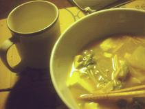

- 味噌汁(汁および具の豆腐は昨晩の残り、追加の具でとろろ昆布) １杯目(２０：３０〜２０：４５)
- 味噌汁(汁および具の豆腐は昨晩の残り、追加の具でとろろ昆布) １杯目(２０：４５〜２１：００)
- 豚キムチ(※豚なし) (２３：００〜２３：１５))
グレープフルーツジュースをドリンクに。
豚キムチに豚を入れない代わりに、何かダシの出そうな具材はないかなって考えたけど、思い浮かばなかったので、思いきって抜いてみました。味付けは味噌とキムチの素です。
豚ってけっこう味がでるから、抜いたらあんまり美味しくないかなってちょっと心配だったけど、キムチの素がありゃとりあえず何とかなるってのは発見でした。
でもグレープフルーツジュースは、不味い！フザケんなバヤ○ース！
果汁１００パーだと思って買ったら１０パーだったのは俺のミスだとしてもねぇ。変な金属の味がすんだよね。こんなんならはじめから２００円くらいの１００パーのやつにしとくんだった。
前回宣言したししゃもはまだ食べてないです。でもししゃもって意外と賞味期限長いんだね。知らなかった。
|

(豚キムチ(豚なし)とグレープフルーツジュース)
|